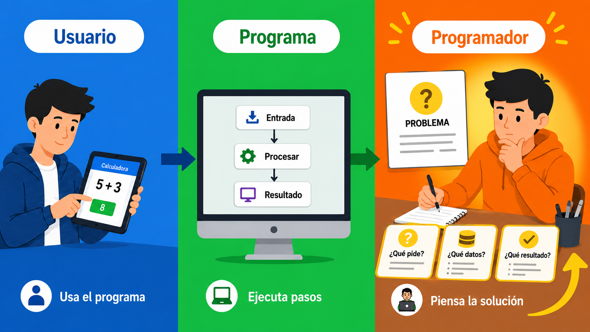
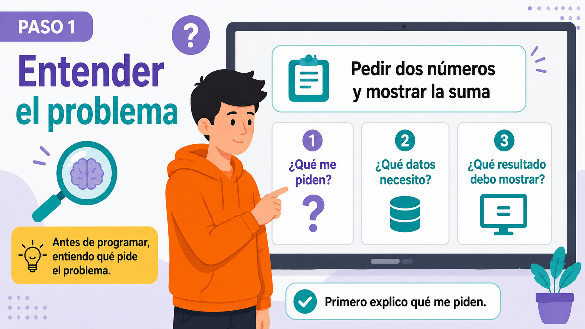
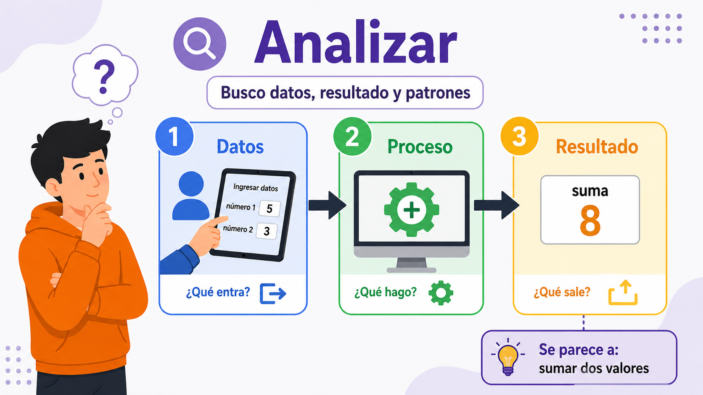
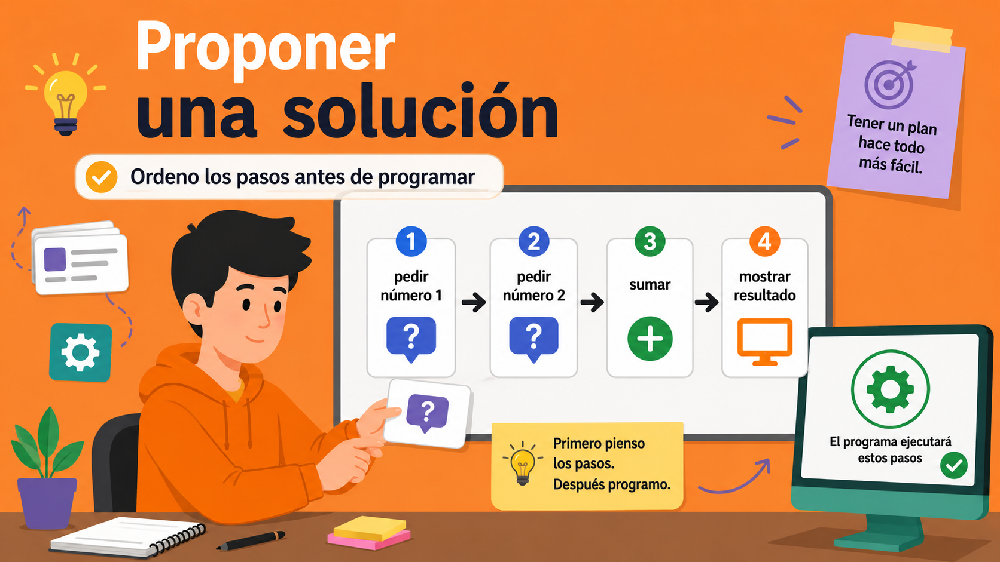
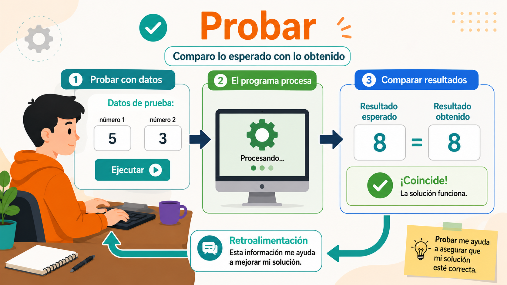
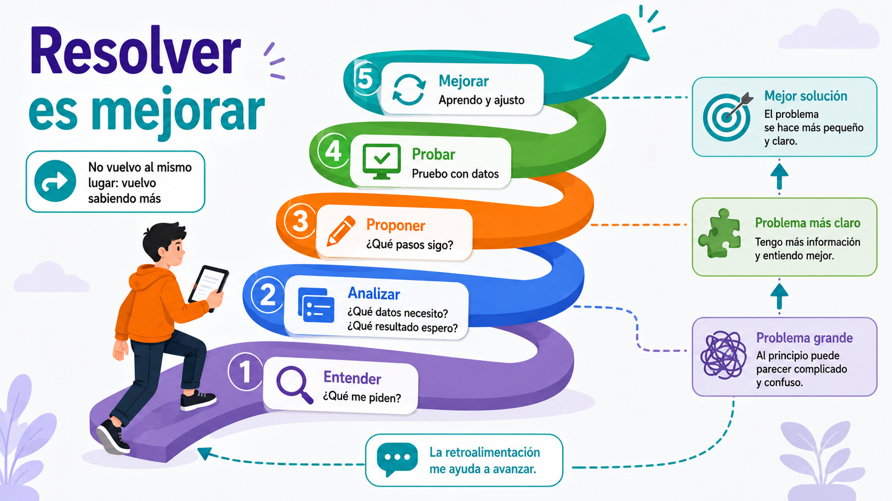

Ahora estoy en el rol del programador
Ya no miro solo como usuario. Ahora pienso cómo resolver el problema.
El usuario usa el programa. Pero el programador debe pensar antes: ¿qué tiene que hacer el programa para ayudar al usuario?
Antes de escribir código, el programador mira la consigna, reconoce los datos y piensa una solución posible.
Para mirar la imagen
- ¿Dónde aparece el usuario?
- ¿Dónde aparece el programa?
- ¿Qué está pensando el programador?

Entender el problema
El primer paso es poder decir con claridad qué me piden.

Entender el problema significa leer la consigna y explicarla con palabras propias.
No alcanza con repetir la consigna. Hay que decir qué debe hacer el programa y para qué sirve.
Analizar: datos, resultado y patrones
Analizar es mirar las partes del problema y buscar problemas parecidos.
Después de entender la consigna, el programador analiza. Mira qué entra, qué proceso se necesita y qué resultado debe salir.
También busca patrones: tal vez el problema se parece a otro que ya resolvimos antes.
Ejemplo
Si el problema dice “pedir dos números y mostrar la suma”, el patrón puede ser: entrada + operación + salida.

Proponer una solución
Antes de programar, ordeno los pasos de la solución.

Proponer una solución significa pensar una forma posible de resolver el problema.
En programación, eso se puede hacer con pasos simples, dibujos o pseudocódigo. Todavía no necesito escribir Java perfecto.
Pasos posibles
- Pedir el primer dato.
- Pedir el segundo dato.
- Hacer el cálculo.
- Mostrar el resultado.
Probar y recibir retroalimentación
Probar es comparar lo que esperaba con lo que realmente pasó.
Un programa no está terminado solo porque “lo escribí”. Tengo que probarlo con datos concretos.
La retroalimentación me dice qué salió bien y qué tengo que revisar. Puede venir del resultado, de un error o de otra persona.

Resolver es mejorar: la espiral
Si algo no funciona, vuelvo a revisar. Pero no vuelvo igual: vuelvo sabiendo más.

Resolver problemas no es un círculo cerrado. En un círculo vuelvo al mismo lugar.
En una espiral vuelvo a revisar, pero con más información. El problema ya no es igual: ahora entiendo mejor qué falta o qué está mal.
Preguntas finales
Respondé en video, en texto o en una hoja. Usá las imágenes y las ideas del material para explicar.
1. Rol del programador
¿Por qué ahora tenemos que pensar desde el rol del programador?
Ayuda: pensá en la diferencia entre usar un programa y crear instrucciones.
2. Entender
Con tus palabras: ¿qué significa entender un problema?
Ayuda: no alcanza con copiar la consigna.
3. Analizar
En un problema de programación, ¿qué son los datos de entrada y qué es el resultado de salida?
4. Proponer
Antes de escribir Java, ¿por qué conviene ordenar los pasos de la solución?
5. Probar
Si un programa debe sumar 5 y 3, ¿qué resultado espero? ¿Para qué me sirve comparar lo esperado con lo obtenido?
6. La espiral
¿Por qué resolver problemas se parece a una espiral y no a un círculo?
Ayuda: pensá qué aprendés después de cada prueba.
7. Aplicación
Leé este problema: “Pedir dos notas y mostrar el promedio”. Explicá:
- ¿Qué me piden?
- ¿Qué datos necesito?
- ¿Qué resultado debe salir?
- ¿Cómo lo probarías?
Para cerrar
El programador no empieza escribiendo código a ciegas. Primero entiende, analiza, propone, prueba y mejora. Así el problema se vuelve más claro y la solución mejora paso a paso.